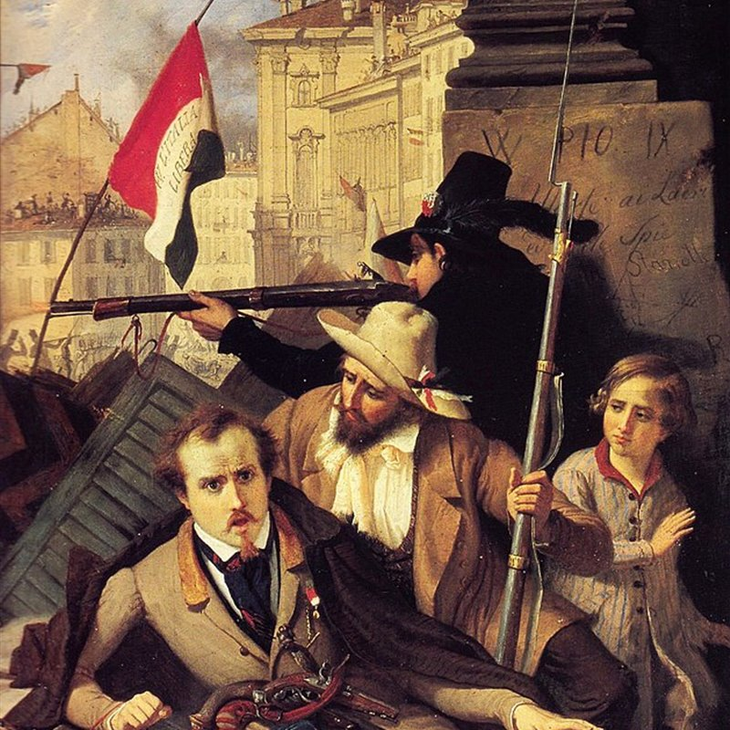
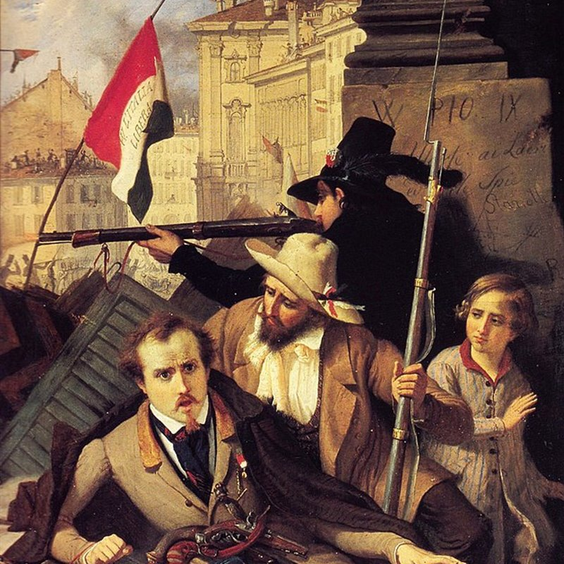
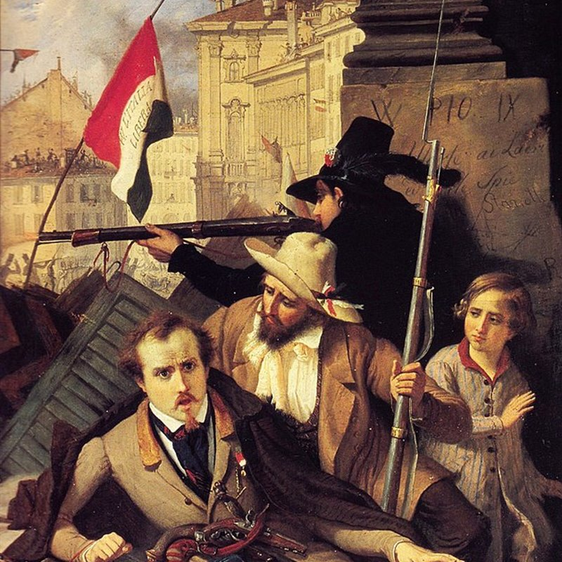

Imagenes de la Unificación Alemana


 

Bajo la influencia del pensamiento romántico, el siglo XIX vio el nacimiento de diversos estados que aspiraban a unir a sus respectivas naciones. Uno de estos fue Alemania, que de una miríada de pequeñas soberanías se convirtió en un poderoso imperio.
Ver Más


Tras las Guerras Napoleónicas, se establece la Confederación Germánica, una asociación de 39 estados alemanes bajo la influencia de Austria y Prusia.

El primer paso hacia la unificación fue la firma de la unión aduanera o Zollverein en 1834, que agrupó a un gran número de estados alemanes, entre los que no se encontraba Austria. Tras este acuerdo, y con el influjo de la revolución democrática de 1848, se reunieron en el Parlamento liberal de Frankfurt. El objetivo principal era la creación de un reino alemán, cuya corona fue ofrecida al rey de Prusia, Guillermo I. Sin embargo, este no aceptó pues provenía de un parlamento con claras ideas liberales, alejado del absolutismo en el que él creía.

Estallan revueltas en varios estados alemanes, exigiendo reformas políticas y unidad nacional.

1862: Bismarck se convierte en primer ministro de Prusia. 1864: Guerra de los Ducados: Prusia y Austria derrotan a Dinamarca y se reparten los ducados de Schleswig y Holstein. 1866: Guerra Austro-Prusiana: Prusia derrota a Austria y establece la Confederación Alemana del Norte, excluyendo a Austria. 1870-1871: Guerra Franco-Prusiana: Prusia derrota a Francia, y en enero de 1871, Guillermo I de Prusia es proclamado emperador alemán en Versalles, culminando así la unificación de Alemania.
La unificación alemana se formaliza con la creación del Imperio Alemán, con Guillermo I como emperador y Bismarck como Canciller.

Tras la derrota en la Primera Guerra Mundial, Guillermo II abdica y se establece la República de Weimar.